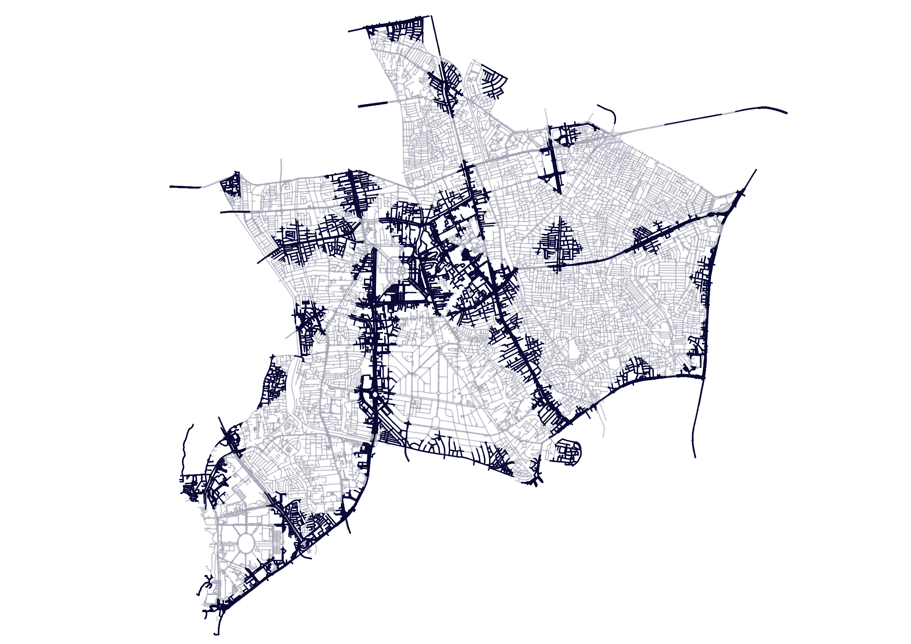
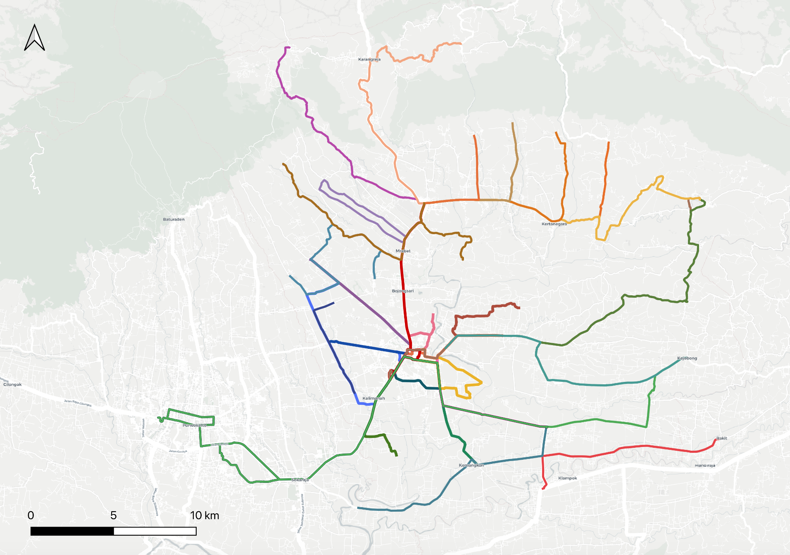

Highlight

Underway
Jaga Sesama: Inclusive Transit Advocacy
Audits and advocacy of disability-friendly transit access and standards for the future of inclusive low-carbon mobility.

Published
Transport for Banjarnegara
Transport for Banjarnegara
Transit Map
Synthesized geospatial data to design regional transit maps for 20 districts with over 30 routes.

Mapping Phase
Underway
Transport for Purbalingga
Transport for Purbalingga
Transit Map
Currently mapping and designing integrated transit networks.
Planning
Transport for Wonosobo
Transport for Wonosobo
Transit Map
Currently planning and acquiring data of transit networks from various operators.